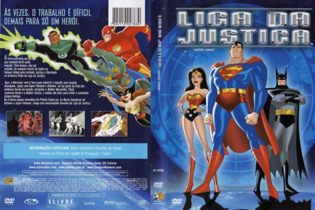

Outro Título:Justice League
País:United States, 10h 50m
Idiomas falados:Inglês, Português
Gênero(s):Animação
Diretor(s):Butch Lukic
Escritor(es):Stan Berkowitz, Rich Fogel, Joseph Kuhr, Keith Damron, Paul Dini
Codec:MPEG-2 (DVD)
Número: 5785


Certificado:L
Sinopse:
Os maiores super-heróis do mundo, como Super-Homem, Batman, Mulher-Maravilha, Lanterna Verde, Flash e outros se unem como a Liga da Justiça para enfrentar vilões poderosos, criaturas sobrenaturais e entidades diabólicas que querem dominar o mundo.
Elenco:


Tipo de mídia: DVD5,
Legendas: Inglês, Português, Sem Legendas
Alugado: Não
Tela: Anamorphic Widescreen